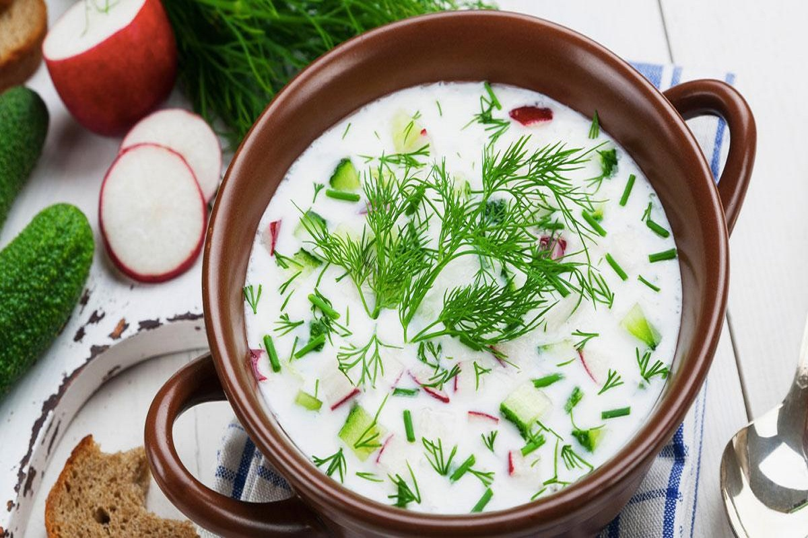
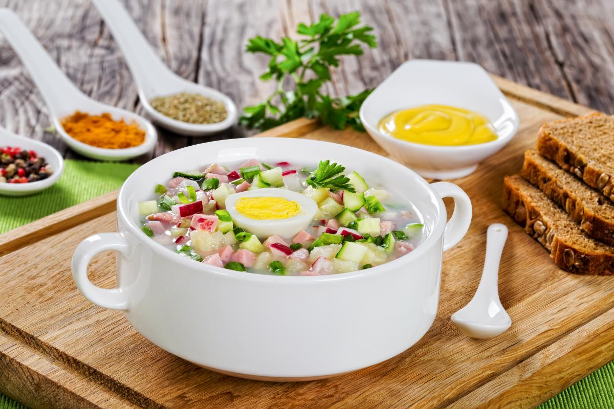

Окрошка с колбасой
Інгредієнти


- Кефир обезжиренный или сыворотка (или квас) - 2-2,5 л
- Сметана - 100 г
- Колбаса вареная или полукопчёная - 150 г
- Картофель отварной - 6 шт.
- Яйца отварные - 3 шт.
- Огурцы - 2-3 шт.
- Лук зелёный - 1 пучок
- Укроп свежий - 1 пучок
- Соль - 1 ч. ложка
Окрошка – легка й освіжаюча страва. Особливо доречною вона буде влітку в спекотну погоду, адже окрошка надає не лише відчуття свіжості, а й водночас є ситною стравою. Цей холодний суп можна сміливо назвати однією із найпопулярніших страв упродовж багатьох років. Існує чимало способів приготувати окрошку.
Рецепт окрошки нехитрий: в цей холодний суп додають улюблене м'ясо або ковбасу і сезонні овочі. Потім продукти заливаються квасом, кефіром або мінералкою. Простота приготування і легкий смак забезпечили окрошка народну любов.
Відварити картоплю та яйця, остудити й почистити. Нарізати картоплю, яйця, редис, огірки та ковбасу кубиками. Подрібнити зелень. Змішати всі інгредієнти й посолити. Викласти все у миску, залити квасом і посипати зеленню. На стіл подавати зі сметаною.
Огірки наріжте дрібними кубиками й відправте у холодильник.
Зелену цибулю дрібно наріжте і розітріть у ступці з сіллю, потім відставте вбік.
Я йця зварити й дрібно нарізати (можна також всі білки дрібно нарізати, а жовтки розтерти з гірчицею).
Редис дрібно наріжте і відправте теж у холодильник.
Дрібно наріжте решту зелені. Викладіть усі підготовлені інгредієнти – разом з нарізаною невеликими кубиками шинкою – у велику миску або супницю. Додайте всю зелень, включаючи настояну зелену цибулю (тільки злийте сік) і перемішайте. Скуштуйте і за необхідності посоліть.
Додайте кефір. Перемішайте окрошку, розлийте по тарілках. Дістаньте лід з формочок і покладіть у кожну тарілку по 2-3 шматочки. Окрошку відразу подавайте. Смачного!